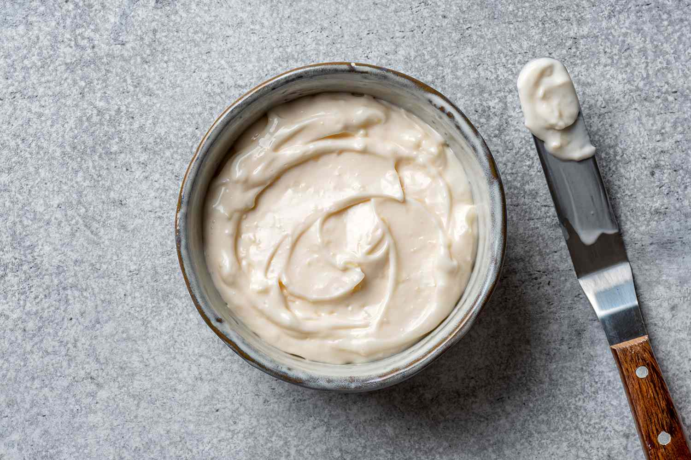

Home Page
Garlic Mayo

Description
This garlic mayo dip is creamy and savory. This is blended with fresh garlic, a touch of citrus or vinegar, and simple seasonings.
This is rich in flavor and a bit garlicky - perfect for dipping fries, meats, or seafoods.
Ingredients
- 500g Real Mayonnaise
- A bit of Garlic Powder
- 250ml All Purpose Cream
- 5tbsp Lemon Juice
- Minced fresh Garlic
- A bit of Pepper
Steps
- In a bowl, combine the mayonnaise and all-purpose cream and mix well until smooth
- Add the lemon juice and stir until fully blended
- Add the minced fresh garlic and a small amount of garlic powder
- Season with a bit of pepper, then mix everything well
- Taste and adjust garlic or lemon juice if needed
Other Recipes